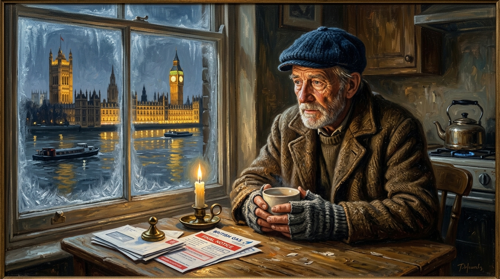

How the UK Rips Off Its State Pensioners.
An Examination of Broken Social Contracts, Cold Homes, and the Stark Disparity Between National Wealth and Pensioner Dignity.

“The true measure of a nation is not how it treats the powerful. It is how it treats those who no longer possess power. Pensioners are not a burden. They are not economic leftovers.” — Trevor Swistchew
Socio-Economic Dossier: Evidence on Winter Mortality & OECD Spending
UKHSA Cold Mortality Statistics, Age UK Fuel Findings & House of Commons Library SN00290The Epidemiological Evidence: Cold Homes Kill
In February 2026, the UK Health Security Agency (UKHSA) published its inaugural Cold Mortality Monitoring Report: Winter 2024 to 2025, attributing 2,544 deaths to cold weather episodes across England in just three months, disproportionately striking those aged 85 and older. This official data corroborates landmark public health research by Dr. José Iparraguirre and Age UK, which demonstrated that the universal Winter Fuel Payment prevented approximately 12,000 excess winter deaths every year. Cutting winter heating support in an uninsulated housing stock forces vulnerable pensioners to choose between hypothermia and starvation.
The greatest scandal in modern Britain is not hidden behind classified documents or buried in obscure government reports. It is visible in towns, villages and cities throughout the country. It is the sight of elderly men and women, after a lifetime of work and taxation, struggling to survive in one of the wealthiest nations on Earth.
For decades politicians have praised pensioners as the generation that built Britain. They speak of sacrifice, duty, hard work and service. They celebrate wartime courage and post war reconstruction. They wrap themselves in the language of gratitude whenever an election approaches. Yet when the speeches end and the cameras disappear, many pensioners are left confronting a very different reality.
The United Kingdom devotes a smaller share of national income to state pensions and pensioner benefits than many comparable advanced countries.[2][7]
The House of Commons Library notes that the UK spends a lower proportion of GDP on state pensions and pensioner benefits than most other advanced economies.[2]
The consequence of this political choice is not measured merely in statistics. It is measured in cold homes, empty cupboards, financial worry and declining living standards. Millions of people who spent forty or fifty years contributing to society have discovered that retirement is not always a period of comfort but often a period of uncertainty.
This did not happen because Britain lacks wealth.
The United Kingdom remains one of the largest economies in the world. The issue is not whether resources exist but how those resources are allocated. Every government budget is a statement of priorities. Every spending decision reveals what those in power regard as important. Pensioners are therefore entitled to ask a simple and uncomfortable question: if Britain can afford so much else, why can it not guarantee greater financial security for the people who spent their lives funding the state through work and taxation?
“Every government budget is a statement of priorities. Every spending decision reveals what those in power regard as important.”
If Britain can afford billions for corporate subsidies, prestige projects, and foreign commitments, why can it not guarantee warmth and security to the people whose labour funded the state for half a century?
The controversy surrounding winter support has exposed this question with particular force. Researchers have long warned that cold homes are not merely unpleasant but dangerous. Research highlighted by José Iparraguirre found that the introduction of Winter Fuel Payments was associated with a substantial reduction in excess winter mortality among older people.[3] Age UK reported that the reduction was equivalent to around 12,000 fewer deaths annually among older people.[1][3]
The human cost of cold weather remains severe. In February 2026, the UK Health Security Agency published its first Cold Mortality Report, estimating 2,544 deaths linked to cold weather episodes in England between November 2024 and January 2025. The greatest impact fell upon older age groups, particularly those aged eighty-five and above.[4][5]
Official public health data confirms what common decency should make obvious: freezing temperatures in unheated homes trigger cardiovascular and respiratory failure in the frail elderly. The withdrawal of heating assistance transforms winter from a seasonal challenge into a public health catastrophe.[6]
No one should claim that every winter death results from one government policy. The evidence does not establish that. What the evidence does establish is that cold weather kills vulnerable older people, that financial assistance with heating improves outcomes, and that many elderly citizens remain exposed to severe risks from fuel poverty and inadequate resources.[3][4][5]
That reality presents a profound moral challenge. A modern and wealthy society should not force elderly people to choose between heating and other essentials. Nor should it tolerate conditions in which retirement becomes a struggle for survival rather than a period of dignity.
The political establishment frequently presents itself as compassionate and caring. Yet many pensioners view the system differently. They see governments willing to praise them while they are useful, celebrate them while they are symbolic, and remember them when their votes are needed, but unwilling to provide the level of economic security enjoyed by retirees in many comparable European countries.
Whether you support or oppose particular governments is beside the point. The central question is larger than party politics. It concerns the nature of the social contract itself.
Citizens are told from youth that they should work, contribute, pay taxes and obey the law. Most pensioners did exactly that. They upheld their obligations year after year. Many now question whether the state has honoured its side of the bargain.
The Moral Measure of the Nation
“The true measure of a nation is not how it treats the powerful. It is how it treats those who no longer possess power.”
— Trevor Swistchew • 2026
Pensioners are not a burden. They are not economic leftovers. They are the generation whose labour helped create the wealth, infrastructure and public institutions that Britain enjoys today.
A country that celebrates its elderly in words while leaving too many of them in financial hardship invites hypocrisy. A country that praises sacrifice while tolerating poverty in old age cannot easily claim to have fulfilled its obligations.
The debate over pensions is therefore about more than money. It is about dignity, justice and national priorities. It is about whether decades of work and contribution are genuinely valued once a citizen reaches old age.
The Stark Indictment
“It is about whether decades of work and contribution are genuinely valued once a citizen reaches old age.”
“For millions of pensioners facing financial insecurity, the answer is no.”
© 2026 Trevor Swistchew. All rights reserved.